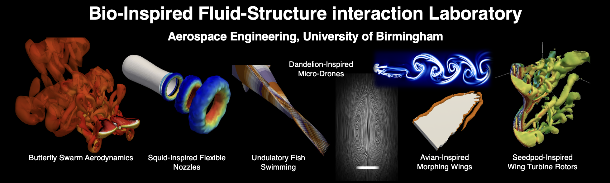
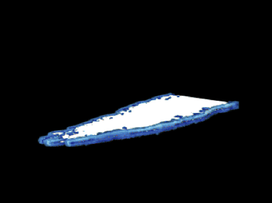
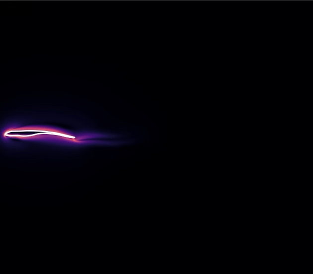
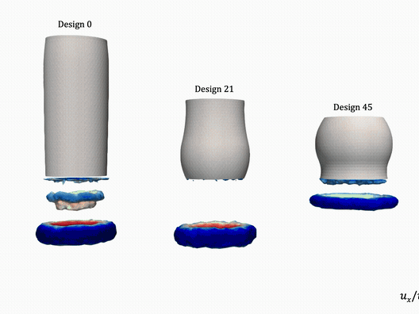

Research Themes
Flapping Wing Aerodynamics


|
We investigate how flapping wings generate aerodynamic forces through the formation, evolution and interaction of vortices. Our research has revealed how regular wing motions can produce chaotic wakes and unpredictable aerodynamic loads. We have identified disturbances in the leading-edge vortex as a primary trigger for the transition from ordered to chaotic flow: small irregularities can progressively disrupt an organised wake, with spontaneously formed vortex pairs and subsequent vortex interactions sustaining the breakdown. By connecting these near-wing processes with downstream wake behaviour, we have established a dynamic link between near- and far-field transitions and identified wake jet-switching as an important precursor to chaos. These contributions provide a physical framework for understanding unsteady force generation and inform the design of flapping-wing systems with more predictable aerodynamic performance. Relevant Publications
|
Butterfly Aerodynamics


|
We explore how the diversity of butterfly wing shapes influences three-dimensional vortex dynamics and aerodynamic performance. Our comparative simulations of Swallowtail-, Indian leaf- and Monarch-inspired wings reveal how wing geometry changes the development and interaction of leading-edge, trailing-edge and wing-tip vortices. We have identified differences in vortex persistence, spanwise circulation and aerodynamic force generation across these geometries, demonstrating that stronger vortices do not necessarily produce higher peak lift. This work provides a physical basis for selecting wing shapes for butterfly-inspired micro aerial vehicles. Relevant Publications
|
Active and Passive Morphing Wings
|
  |
We investigate how controlled shape changes and passive structural deformation can improve wing performance in unsteady flows. Our studies have demonstrated that flexible trailing edges can suppress wake jet-switching and restore more regular flow patterns, while bird-inspired foil geometries exhibit distinct responses to accelerated motion. We have shown that the benefits of flexibility depend on wing shape, stiffness and the extent of the flexible region. Building on these findings, our ongoing research examines how active actuation and passive compliance can work together to manage aerodynamic loads and adapt to changing flight conditions. Relevant Publications
|
Gust Response of Flexible Wings


|
We investigate how wing flexibility influences aerodynamic loads, structural deformation and vortex dynamics during gust encounters. Using coupled fluid–structure interaction simulations, we examine how wing geometry, stiffness and the distribution of flexible regions govern the response to unsteady disturbances. Our studies of bird-inspired foils under accelerated motion have identified geometry-dependent optimal stiffness levels, demonstrating that the benefits of flexibility depend on how deformation interacts with vortex formation and force generation. Building on these findings, we explore how passive wing adaptation can moderate load fluctuations and improve aerodynamic stability, providing design principles for lightweight aerial vehicles operating in gusty environments. |
Gust Response of Passive Flyers

|
We study how freely moving bodies respond to gusts through the coupled evolution of their motion and surrounding flow. Our research on free-falling plates has revealed how transverse gusts generate circulation and displace the body relative to its wake, increasing upward aerodynamic forces and temporarily reducing descent speed. We have also established how pitching motion, body density and gust strength govern this response. These findings explain how passive flyers can extract energy from environmental disturbances to remain aloft longer, informing the development of lightweight aerial sensing and dispersal systems. Relevant Publications
|
Nonlinear Aeroelasticity


|
We investigate the complex oscillations that emerge when aerodynamic forces interact with structural nonlinearities. Through numerical modelling and wind-tunnel experiments, our work has characterised instability transitions in pitching–plunging aerofoils, including the effects of dynamic stall, structural freeplay and fluctuating inflow. We have used synchronisation between structural modes to explain how these instabilities develop and how changes in structural parameters alter their behaviour. Our studies also connect unsteady response with fatigue damage, contributing to a deeper understanding of the stability and durability of flexible aerodynamic structures. Relevant Publications
|
Flow-Induced Vibrations


|
We examine how vortex shedding and fluid–structure coupling drive the oscillations of bluff bodies and flexible structures. Our research has shown how neighbouring bodies, wake interference and intermittent structural contact can change vibration amplitudes and trigger transitions between regular, irregular and galloping responses. We have also investigated passive vibration suppression using nonlinear energy sinks, explaining how energy transfer can reduce large oscillations. Together, these contributions clarify the mechanisms governing flow-induced response and provide guidance for managing vibrations in engineering systems. Relevant Publications
|
Jet Propulsion through Squid-Inspired Flexible Nozzles


|
We investigate how squid-inspired flexible nozzles enhance pulsed-jet propulsion through the coupling of fluid flow and structural deformation. Combining biological observations, experiments and three-dimensional fluid–structure interaction simulations, our collaborative work has shown that a compliant nozzle can store elastic energy during jet acceleration and release it through carefully timed recoil, amplifying propulsive impulse. We have linked travelling deformation waves to fluid entrainment, jet acceleration and vortex-ring formation, and developed reduced-order models to explain these mechanisms. Our optimisation studies reveal trade-offs between thrust and energy expenditure, identifying flexible-nozzle designs that improve propulsion efficiency. These findings inform the development of soft underwater thrusters and bio-inspired robotic propulsion systems. Relevant Publications
|
Data-Driven Optimisation and Reduced-Order Modelling

 ' |
We combine physical understanding with data-driven methods to develop compact models and guide the design of fluid–structure interaction systems. Our work has evaluated sparse equation discovery and its weak formulation for vortex-induced vibrations, alongside modal approaches for representing wake dynamics. These studies identify both the promise and the limitations of reduced descriptions, particularly for irregular responses. We also apply multi-objective Bayesian optimisation to rigid and flexible propulsion nozzles, examining trade-offs between thrust, energy use and efficiency to support more informed design decisions. Relevant Publications
|
Permeable-Body Aerodynamics


|
We investigate how flow through a body changes its aerodynamic forces and wake dynamics. Our studies of porous plates and permeable disks have revealed how permeability modifies recirculation, alters instability transitions and produces flow regimes absent behind impermeable bodies. We have identified conditions that suppress unsteadiness, alongside more complex behaviour at intermediate permeability, and examined mechanisms through which permeable disks can experience enhanced drag. These contributions establish permeability as a design parameter for controlling aerodynamic response, with potential applications in passive flight and lightweight aerial devices. Relevant Publications
|
Flow Energy Harvesting

|
We investigate how flow-driven structural motion can be converted into useful electrical energy. Combining experiments and numerical simulations, our work has demonstrated how wake interactions and simple geometric modifications influence the performance of piezoelectric energy harvesters. We have shown that appropriately positioned splitters can promote transitions from vortex-induced vibration to galloping and improve electrical output, while studies of flexible flappers reveal the importance of their position relative to upstream vortex shedding. These findings connect the underlying flow physics with practical choices for designing compact flow energy harvesters. Relevant Publications
|
Wave-Structure Interaction


|
We investigate how surface water waves interact with flexible and floating structures, and how this two-way coupling can be harnessed for marine renewable energy. Combining laboratory experiments with fluid–structure interaction simulations, we examine how incoming waves load and deform compliant structures, how structural stiffness, geometry and resonance shape the resulting motion, and how the structure in turn reflects, transmits and dissipates wave energy. Through a UK–France collaboration with PMMH (CNRS, Paris), we are exploring flexible wave energy converters that exploit passive deformation to extract energy efficiently across a range of wave conditions. These studies aim to establish design principles for robust, low-cost wave energy harvesters and wave-responsive coastal structures. |
Interfacial Locomotion


|
We investigate how small organisms generate thrust at the air–water interface, where surface tension and vortical flows jointly influence movement. Through collaborative experiments, flow measurements, physical models and simulations, we have demonstrated interfacial vortex recapture in the water-skating insect Microvelia americana. Its hind legs re-energise vortices produced by the middle legs, increasing propulsive forces through carefully coordinated motion. This work extends vortex-recapture principles to surface locomotion and identifies biological strategies that could inform the development of efficient microrobots operating on water. Relevant Publications
|
Advanced Computational Methods and GPU-Accelerated Solver Development


|
We develop computational methods that make detailed simulations of moving bodies and interacting wakes more accessible. Our work combines immersed-boundary methods with overset grids to resolve complex geometries and body motion while concentrating computational effort where it is needed. We have contributed efficient grid-management and interpolation strategies, together with GPU and multi-GPU implementations, and validated these approaches across canonical and complex moving-body problems. These developments provide a scalable foundation for investigating bio-inspired flight, propeller flows and interactions between multiple moving bodies. Relevant Publications
|
Flow in Anisotropic Media: Directional Solidification and Defect Formation

|
We are extending our research on flow through permeable media to investigate directional solidification and defect formation. This emerging theme focuses on how directional differences in permeability influence fluid transport through an evolving solid–liquid structure. Our aim is to connect flow behaviour with the mechanisms that generate material defects, bringing fluid-mechanical modelling into closer dialogue with solidification research. Through this work, we seek to develop a physical understanding that can support improved prediction and control of material quality during manufacturing. |